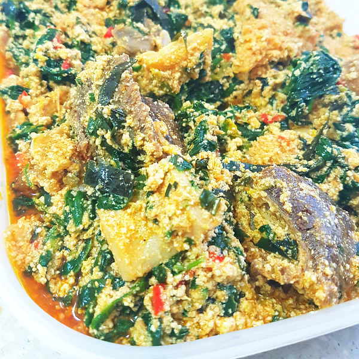

Nigerian Egusi Soup is a rich and delicious traditional Nigerian soup
made with ground melon seeds, assorted meats, fish, vegetables, and
traditional spices. It is commonly enjoyed with pounded yam, eba,
fufu, semolina or Tuwo

Ingredients
2 cups of ground egusi (melon seeds)
500g of assorted meat
200g of stockfish
200g of smoked fish
2 cups of chopped ugu leaves
1 medium onion
2 cooking spoons of palm oil
2 tablespoons of ground crayfish
2 tablespoons of ground pepper
2 seasoning cubes
Salt to taste
Goat meat/Beef
Preparation
Wash and season the assorted meat, then cook until tender. Reserve the meat stock.
Soak the stockfish and smoked fish in warm water, then clean and set aside.
Heat the palm oil in a pot and lightly sauté the chopped onions.
Add the ground egusi and stir continuously for a few minutes.
Add the meat stock gradually and stir until the egusi is well combined.
Add the cooked meat, stockfish, smoked fish, and ground crayfish.
Season with pepper, seasoning cubes, and salt to taste.
Cover and allow the soup to cook on medium heat until the egusi is fully cooked.
Add the chopped ugu leaves and simmer for a few minutes.
Stir gently, adjust the seasoning if necessary, and serve hot.